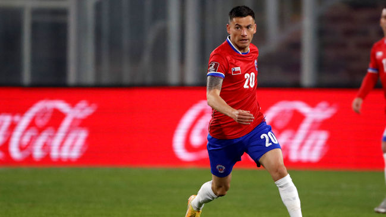
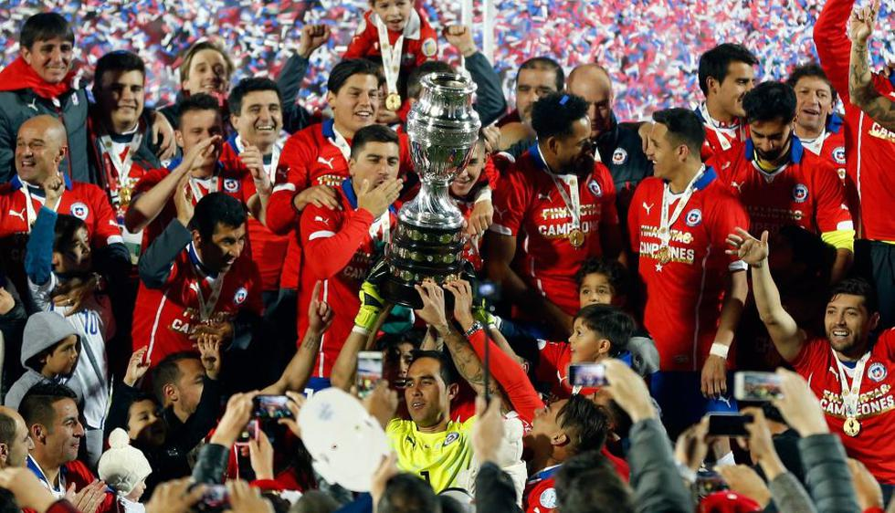

Los saludos del mundo del fútbol a Charles Aránguiz por su cumpleaños número 33
¡Nos vamos a Cali! El calendario de La Roja Femenina en la Copa América 2022
Sampaoli manda: Las mejores y peores estadísticas de los DT de Chile
Final Copa América Centenario Chile 0 (4) Argentina 0 (2)
Chile 0 4 vs 0 1 Argentina Penales Final Copa América 2015
CONMEBOL Sub20 FEM 2022 | Perú 0-3 Chile| HIGHLIGHTS
Tercer lugar - Copa Mundial de Fútbol de 1962

Campeón Copa América 2015
Campeón Copa Centenario 2016
Subcampeón Copa Confederaciones